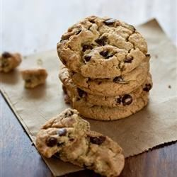

Don’t overcrowd your pan or baking dish.
Submitted by Caroline Mahoney
With baking cookies it's easy to want to fit in as many as possible. The problem with that is they release moisture as they cook. The cookies will get bigger and with meld into one cookie. The perfect little beauties you put in the oven will turn into an ugly mass of dough and chocolate. This makes them very hard to separate.
What to do?
Arrange the cookies in rows, at least 1 inch apart. That will give them space to spread out and become nice and fluffy.
image source